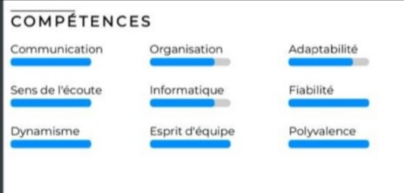

PROFIL PROFESSIONELLE
étudiant motivé en devellopement web ,cyber sécuriter et freelances
je suis à la recherche dun travail temporaire pour subvenir a mes besoin quotidients
j'ai une capaciter d'adaptation très élever je suis prêt à mettre mes capaciter au service de votre entreprise
COMPETENCE PROFFESSIONELLE
-developpeur web
- machiniste
-e-commerce proffessionel
COMPETENTE EN COURS
programmation orienté objet en c++
programmation orienté objet en java
programation en assembleur
| PARCOURS SCOLAIRE |
| CEPE:2017 école catholique de balengou |
BEPC: 2021-LYCEE BILINGUE DE BALENGOU |
PROBATOIRE C:2023-LYCEE BILINGUE DE BALENGOU |
BACC C:2024-LYCEE BILINGUE DE BALENGOU |
